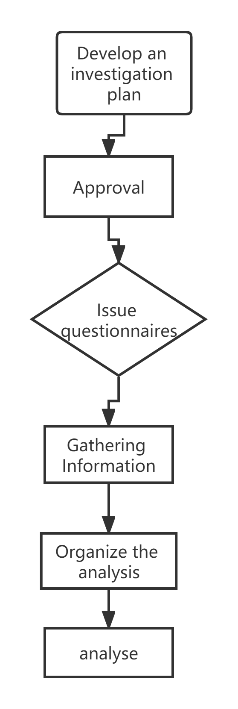

Data collection→ analysis of qualitative data→ analysis procedures→ resulting in qualitative research reports.

After the questionnaire is collected and reviewed, it should be sorted and analyzed, and now the questionnaire data is mostly coded and quantified, and computer software is used for analysis